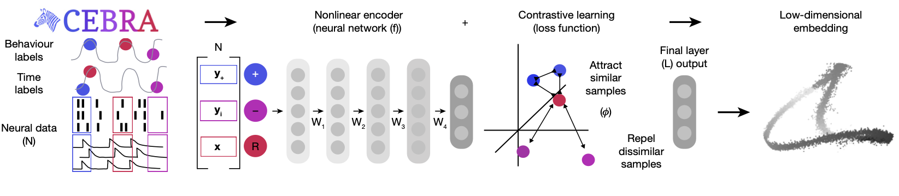
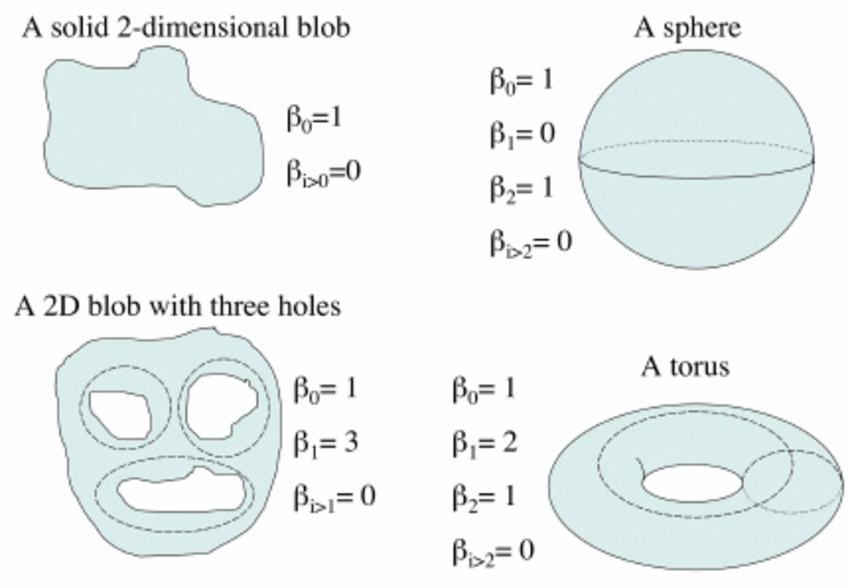

Problem Description:
Seeing, hearing, touching – every moment, our brain receives numerous sensory inputs. How does it organize this wealth of data and extract relevant information? We know that the brain forms a coherent neural representation of the external world called the cognitive map (Tolman (1948)), formed by the combined firing activity of neurons in the hippocampal formation. For example, place cells are neurons that fire when a rat is at a particular location (Moser, Kropff, and Moser (2008)). Together, the activity of hundreds of these place cells can be modeled as a continuous surface - a ‘manifold’ - the location on which is analogous to the rat’s location in physical space; the rat is indeed creating a cognitive map. Specifically, the hippocampus plays a key role in this process by using path integration to keep track of an animal’s position through the integration various idiothetic cues (self-motion signals), such as optic flow, vestibular inputs, and proprioception. Manifold learning has emerged as a powerful technique for mapping complex, high-dimensional neural data onto lower-dimensional geometric representations (Mitchell-Heggs et al. (2023), Schneider, Lee, and Mathis (2023), Chaudhuri et al. (2019)). To date, it has not been feasible to learn manifolds ‘online’, i.e. while the experiment is in progress. Doing so would allow ‘closed-loop’ experiments, where we can provide feedback to the animal based on its internal representation, and thereby examine how these representations are created and maintained in the brain.
The question then arises: Can we decode important navigational behavioural variables during an experiment through manifold learning? And further, can we learn these manifolds online? This blog will focus on experiments conducted in “Control and recalibration of path integration in place cells using optic flow” (Madhav et al. (2024)) and “Recalibration of path integration in hippocampal place cells” (Jayakumar et al. (2019)).
Experimental Setup
In (Madhav et al. (2024) and Jayakumar et al. (2019)), Dr. Madhav and colleagues designed an experimental setup to investigate how optic flow cues influence hippocampal place cells in freely moving rats. Place cells are neurons that fire when an animal is in a specific location.
Let’s take an example to better understand: imagine a rat moving along a horizontal linear track. For simplicity let’s say the rat has only 3 place cell neurons. In this case, Neuron 1 would fire when the rat is at the very left of the track, Neuron 2 would fire when the rat is in the middle of the track, and Neuron 3 would fire at the very right of the track. As the rat moves along the track, the specific place cells corresponding to each location become activated, helping the rat to construct an internal cognitive map of its environment.
The Dome Apparatus
In the experiment, rats ran on a circular platform surrounded by a hemispherical projection surface called the Dome.

The dome projects moving stripes that provided controlled optic flow cues. The movement of the stripes was tied to the rats’ movement, with the stripe gain (\(\mathcal{S}\)) determining the relationship between the rat’s speed and the stripes’ speed.
\(\mathcal{S}\) = 1: Stripes are stationary relative to the lab frame, meaning the rat is not recieving conflicting cues.
\(\mathcal{S}\) > 1: Stripes move opposite to the rat’s direction, causing the rat to percieve itself as moving faster than it is.
\(\mathcal{S}\) < 1: Stripes move in the same direction but slower than the rat, causing the rat to percieve itself as moving slower than it is.
Electrodes were inserted into the CA1 of the hippocampus of male evan’s rats and spike rate neural activity was recorded during the experiment. Dr. Madhav and colleagues introduce a value \(\mathcal{H}\), called the Hippocampal Gain. It is defined as the relationship between the rat’s physical movement and the updating of its position on the internal hippocampal map. At a high level, we can think of it as the rate at which the rat “perceives” itself to be moving because of the conflicting visual cues. Specifically,
\[ \mathcal{H} = \frac{\text{distance travelled in hippocampal reference frame}}{\text{distance travelled in lab reference frame}}. \]
In this equation, distance travelled in the hippocampal frame refers to the distance that the rat “thinks” it’s moving.
\(\mathcal{H} = 1\): The rat perceives itself as moving the “correct” speed.
\(\mathcal{H} > 1\): The rat perceives itself as moving faster than it actually is with respect to the lab frame.
\(\mathcal{H} < 1\): The rat perceives itself as moving slower than it actually is with respect to the lab frame.
\(\mathcal{H}\) gives valuable insights into how these visual cues such as the moving stripes affect the rats’ internal cognitive map during the task. It gives an understanding of how the rats update their perceived position in the environment.
For example, an \(\mathcal{H}\) value of 2, would mean that the rat perceives itself as moving twice as fast as it actually is. Consequently each place cell corresponding to a specific location in the maze will fire twice per lap rather than once.
Description of the problem
Method of Determining \(\mathcal{H}\): Traditionally, \(\mathcal{H}\) is determined by analyzing the spatial periodicity of place cell firing over multiple laps using Fourier transforms, as seen in (Jayakumar et al. (2019),Madhav et al. (2024)). Below is a figure displaying how the traditional method is used to determine the \(\mathcal{H}\) value.
The frequency of firing for each place cell effectively decodes the \(\mathcal{H}\) value for that specific neuron and the mean \(\mathcal{H}\) value over all neurons gives the estimated \(\mathcal{H}\) value over the neuronal population. This method lacks temporal precision within individual laps since it uses a Fourier Transform over 6 laps.
A more precise, within-lap decoding of Hippocampal Gain (\(\mathcal{H}\)) could provide a deeper understanding of how path integration occurs with finer temporal resolution. This could lead to new insights into how the brain updates its cognitive map when receiving conflicting visual cues.
Also, note how the decoding of \(\mathcal{H}\) is directly tied to the neural data, which makes the traditional method less flexible. It cannot easily be applied to experiments involving two varying neural representations (e.g., a spatial gain \(\mathcal{H}\) and an auditory gain \(\mathcal{A}\)). In such cases, the two representations are coupled in the neural data, making it impossible to separate them.
However, neural manifold learning offers a promising approach to decouple these representations. For instance, consider the hypothetical scenario below, where the data forms a torus:


Figure 3 - Left: varying spatial representation, Right: varying audio representation.
In our current dataset, we only have a single varying neural representation and therefore expect a simpler 1D ring topology. However, in the above scenario, the data might lie on a torus. On this structure, the spatial representation (\(\mathcal{H}\)) could vary along the major circle of the torus, while the auditory representation (\(\mathcal{A}\)) varies along the minor circle. This structure enables us to disentangle and decode the two neural representations independently. This could prove useful in the future when using this method on experiments of this type. We wish to validate this method for single varying representations, and then move on to two varying representations.
Main Goal
Our main goal is therefore to determine this \(\mathcal{H}\) value without using a Fourier Transform and instead somehow find a temporally finer, within lap estimation of \(\mathcal{H}\) using manifold learning. Some key questions that motivate this research include:
How does the velocity of the rat affect the \(\mathcal{H}\) value?
What patterns does the \(\mathcal{H}\) value exhibit over the course of a lap? Does it relate to other behavioural variables?
Some more important goals of this research include a method of decoding the “hippocampal gain” online and feeding these values back into the dome apparatus to control the \(\mathcal{H}\) value to the desired value for the experiment.
We turn to CEBRA Schneider, Lee, and Mathis (2023) as our method of manifold learning. In the next section, we will see how CEBRA can help decode \(\mathcal{H}\) reliably.
The basic idea is as follows: First, we aim to project the neural data into some latent space. In this space, we want the points to map out the topology of the task - specifically, to encode hippocampal position/angle (the rat’s position in the hippocampal reference frame). We assume that this task forms a 1D ring topology, given the cyclic nature of the dome setup and the periodic firing of place cells. Then we want to validate and construct a latent parametrization of this manifold, specifically designed to directly reflect the hippocampal position. With an accurate hippocampal position parametrization, we could then decode \(\mathcal{H}\), giving us a more temporally fine estimation of \(\mathcal{H}\).
Next, we move on to what CEBRA is and how it can help us achieve our goal.
What is CEBRA?
CEBRA, introduced in Schneider, Lee, and Mathis (2023), is a powerful self-supervised learning algorithm designed to create consistent, interpretable embeddings of high-dimensional neural recordings using auxiliary variables such as behavior or time. CEBRA generates consistent embeddings across trials, animals, and even different recording modalities.
In our analysis, we will use the discovery mode of CEBRA, with only time as our auxiliary variable. CEBRA is implemented in python.
The Need for CEBRA
In neuroscience, understanding how neural populations encode behavior is a large challenge. Traditional linear methods like PCA, or even non-linear approaches like UMAP and t-SNE, fail in this context because they fail to capture temporal dynamics and lack consistency across different sessions or animals. CEBRA gets past these limitations by both considering temporal dynamics and providing consistency across different sessions or animals.
How Does CEBRA Work?
CEBRA uses a convolutional neural network (CNN) encoder trained with contrastive learning to produce a latent embedding of the neural data. The algorithm identifies positive and negative pairs of data points, using temporal proximity to structure the embedding space.
CEBRA Architecture
Contrastive Learning
The CEBRA model is trained using a contrastive learning loss function. In CEBRA, this is achieved through InfoNCE (Noise Contrastive Estimation), which encourages the model to distinguish between similar (positive) and dissimilar (negative) samples.
The loss function is defined as: \[ \mathcal{L} = - \log \frac{e^{\text{sim}(f(x), f(y^+)) / \tau}}{e^{\text{sim}(f(x), f(y^+)) / \tau} + \sum_{i=1}^{K} e^{\text{sim}(f(x), f(y_i^-)) / \tau}} \]
Where \(f(x)\) and \(f(y)\) are the encoded representations of the neural data after passing through the CNN, \(\text{sim}(f(x), f(y))\) represents a similarity measure between the two embeddings, implemented as cosine similarity. Here, \(y^{+}\) denotes the positive pair (similar to \(x\) in time), \(y_{i}^{-}\) denotes the negative pairs (dissimilar to \(x\) in time), and \(\tau\) is a temperature parameter that controls the sharpness of the distribution.
Note that the similarity measure depends on the CEBRA mode used, and we have used time as our similarity measure. The contrastive loss encourages the encoder to map temporally close data points (positive pairs) to close points in the latent space, while mapping temporally distant data points (negative pairs) further apart. This way, the embeddings reflect the temporal structure of the data. The final output is then the embedding value in the latent space. Below is a schematic taken from ({Schneider, Lee, and Mathis (2023)}), showing the CEBRA architecture.

Once we obtain the neural embeddings from CEBRA, the next step is to determine the underlying manifold that describes the structure of the resulting point cloud. For example, let’s consider the output of a CEBRA embedding from one experimental session.
The embedding appears to form a 1D circle in 3D space. We can also see that the hippocampal position correctly traces the rat’s hippocampal position throughout the experiment. This observation aligns with our expectations, since we predict that the neural activity encodes the hippocampal reference frame position, not the lab frame position. To validate the 1D ring topology, we apply a technique known as Persistent Homology.
Persistent Homology
Persistent homology allows us to quantify and verify the topological features of our embedded space. Specifically, we want to validate the assumption that the neural representation forms a 1D ring manifold, which corresponds to the rat’s navigation behavior within the environment. The idea of persistent homology is to create spheres of varying radii around each point in the point cloud, and from those spheres, track how the topological features of the shape change as the radius grows. By systematically increasing the radius, we can observe when distinct clusters merge, when loops (1D holes) appear, and when higher-dimensional voids form. These features persist across different radius sizes, and their persistence provides a measure of their significance. In the context of neural data, this allows us to detect the underlying topological structure of the manifold. Below is a figure illustrating this method Schneider, Lee, and Mathis (2023):

Validating a 1D Ring Manifold
To confirm the circular nature of the embedding, we analyze the Betti numbers derived from the point cloud. Betti numbers describe the topological features of a space, with the \(k\)-th Betti number counting the number of \(k\)-dimensional “holes” in the manifold. Below is a figure showing a few basic topological spaces and their corresponding Betti numbers Walker (2008):

For a 1D ring, the expected Betti numbers are: \[ \beta_0 = 1 : \text{One connected component.} \] \[ \beta_1 = 1 : \text{One 1D hole (i.e., the circular loop).} \] \[ \beta_2 = 0 : \text{No 2D voids.} \]
Thus, the expected Betti numbers for our manifold are (1, 1, 0). If the Betti numbers extracted from the persistent homology analysis align with these values, it confirms that the neural dynamics trace a 1D circular trajectory, supporting our hypothesis that the hippocampal representation forms a ring corresponding to the rat’s navigation path.
SPUD Method
Once we’ve validated the assumption that our data forms a 1D ring manifold, we can proceed to fitting a spline to the data. We do this so that we can parametrize our behavioural variable \(\mathcal{hippocampal angle}\) along the point cloud. There are many different methods, but the one chosen for this purpose was taken from Chaudhuri et al. (2019). The spline is defined by a set of points, or knots, which I decided to initialize using kmedoids clustering Jin and Han (2011). The knots are then fit to the data further by minimizing a loss function defined as follows:
\[ \text{cost} = \text{dist} + \text{curvature} + \text{length} - \text{log(density)} \]
where dist is the distance of each point to the spline, curvature is the total curvature of the spline, length is the total length of the spline, and density is the point cloud density of each knot.
Overview of the SPUD Method
Spline Parameterization for Unsupervised Decoding (SPUD) Chaudhuri et al. (2019) is a multi-step method designed to parametrize a neural manifold. The goal of SPUD is to provide an on-manifold local parameterization using a local coordinate system rather than a global one. This method is particularly useful when dealing with topologically non-trivial variables that have a circular structure.
Spline Parameterization: SPUD parameterizes the manifold by first fitting a spline to the underlying structure. Chaudhuri et al. (2019) demonstrated that this works for head direction cells in mice to accurately parametrize, i.e. decode the head direction. Our goal is to have the parametrization accurately decode our latent variable of interest, the Hippocampal Gain (\(\mathcal{H}\)).
Deciding the Parameterization of the Latent Variable
Natural Parametrization
A natural parameterization would mean that equal distances in the embedding space correspond to equal changes in the latent variable. The natural parameterization comes from the assumption that neural systems allocate resources based on the significance or frequency of stimuli. For example, in systems like the visual cortex, stimuli that occur frequently (e.g., vertical or horizontal orientations) might be encoded with higher resolution. However, for systems like place cell firing, where all angles are spaces are equally probable in the dome, the natural parameterization reflects this uniform encoding strategy, with no overrepresentation of certain places (Chaudhuri et al. (2019)).
Alternative Parameterization and its Limitations
An alternative parameterization method was considered, in which intervals between consecutive knots in the spline were set to represent equal changes in the latent variable. This approach was designed to counteract any potential biases in the data due to over- or under-sampling in certain regions of the manifold.
However, this alternative was not determined to be effective in practice by Chaudhuri et al. (2019). Given sufficient data, the natural parameterization performed better, supporting the conclusion that it better reflects how neural systems encode variables. This is also the case for our experiment. Look to the following figure, in which a spline is fit to the data and a color map is applied to the natural parametrization. We can see that it aligns almost perfectly with the hippocampal angle. Great, that’s exactly what we wanted!

So, what do we do now that we have an accurate parametrization of the \(\mathcal{hippocampal \. angle}\)?
Decoding Hippocampal Gain (\(\mathcal{H}\))
Final Step
The final step is to decode \(\mathcal{H}\) from the parametrization. The method to do this is straightforward. Once we have parametrized the spline accurately to the neural data, we calculate the hippocampal gain by comparing the distance/angle traveled in the neural manifold (derived from our spline) to the distance/angle in the lab frame (actual movement of the rat).
The idea is that:
\[ \mathcal{H} = \frac{d\theta_\mathcal{H}}{d\theta_\mathcal{L}} \]
where \(\theta_H\) is the change in angle in the hippocampal reference frame, decoded from our spline parametrization of the neural manifold, and \(\theta_L\) is the physical angle traveled by the rat in the lab frame.
Note that this is actually just the original definition of \(\mathcal{H}\), but now \(\theta_H\) is determined by our spline parameter, not the Fourier Transform method.
For example, let’s take a time interval, say 1–2 seconds. To determine the hippocampal gain within that frame, we observe where the neural activity at times 1 and 2 maps in our manifold, calling these \(\theta_{H1}\) and \(\theta_{H2}\), respectively. Then, using the lab frame angles at times 1 and 2, which we’ll call \(\theta_{L1}\) and \(\theta_{L2}\), we find that:
\[ \mathcal{H}(\text{between } t=1 \text{ and } t=2) = \frac{\theta_{\mathcal{H2}} - \theta_{\mathcal{H1}}}{\theta_{\mathcal{L2}} - \theta_{\mathcal{L1}}} \]
We extend the above example to all consecutive time points in the experiment to compute hippocampal gain (\(\mathcal{H}\)) dynamically. The following Python code demonstrates how this is implemented:
def differentiate_and_smooth(data=None, window_size=3):
#Compute finite differences.
diffs = np.diff(data)
# Compute the moving average of differences.
kernel = np.ones(window_size) / window_size
avg_diffs = np.convolve(diffs, kernel, mode='valid')
return avg_diffs
derivative_decoded_angle_rad_unwrap = differentiate_and_smooth(data=filtered_decoded_angles_unwrap, window_size=60) #hippocampal angle from manifold parametrization.
derivative_true_angle_rad_unwrap = differentiate_and_smooth(data=binned_true_angle_rad_unwrap, window_size=60) #true angle from session recordings.
derivative_hipp_angle_rad_unwrap = differentiate_and_smooth(data=binned_hipp_angle_rad_unwrap, window_size=60) #hippocampal angle from Fourier Transform (traditional method, can be thought of as ground truth).
decode_H = (derivative_decoded_angle_rad_unwrap) / (derivative_true_angle_rad_unwrap) #take the "derivative" of hippocampal angle at each time point and divide by "derivative" of true angle at each time point.
#Now, plot H from manifold optimization vs H from traditional method (shown in results).This code calculates the hippocampal gain, \(\mathcal{H}\), by dividing the derivative of the hippocampal angle (obtained from the manifold parameterization) by the derivative of the true angle (obtained from session recordings). The result can be compared to \(\mathcal{H}\) from the traditional Fourier-based method, as shown in the results section.
Results
We now display and discuss the results. Below are a few results from applying this method to real experimental data from “Control and recalibration of path integration in place cells” (Madhav et al. (2024)). We first show two “good” trials (session 50 and 36), and two “bad” trials (session 26 and 29). We had trials where our data did not trace out a 1D ring topology in the pointcloud as can be clearly seen from the spline parametrization (and which can be easily quanitatively assessed using persistent homology). I will explain more clearly below what we mean by “good” and “bad”.
Point clouds and parametrization

Now we plot our H value decoded from the manifold versus the H value decoded from the Fourier Transform method and compare for “good” trials and “bad” trials.
H values
a
b
c
d
Figure 5 - Plot of manifold-decoded gain (red) vs. gain from the traditional method (blue) for different sessions: (a) Session 50, (b) Session 26, (c) Session 36, and (d) Session 29.
After observing both successful and unsuccessful trials, I asked: what distinguishes “good” results from “bad” ones?
It became evident that the quality of results was strongly influenced by the number of neurons in the experimental recording. To quantify the quality of an embedding, I used the Structure Index (SI) score (Sebastian, Esparza, and Prida (2022)). The SI score measures how well the hippocampal angle is distributed across the point cloud.
- SI ranges from 0 to 1:
- 0: The hippocampal angle is randomly distributed within the point cloud.
- 1: The hippocampal angle is perfectly distributed, indicating a clear and accurate representation.
Thus, a higher SI score corresponds to a better alignment between the hippocampal angle and the manifold parameterization.
Results
Consider the trials discussed earlier:
- Successful trials (Sessions 50 and 36): SI scores were 0.89 and 0.9, respectively.
- Unsuccessful trials (Sessions 26 and 29): SI scores were 0.34 and 0.67, respectively.
The plot below illustrates the relationship between the number of neurons (or clusters) and the SI score. This highlights what I refer to as the “curse of clusters”: A minimum number of clusters (neurons) is required to achieve a successful trial.
This shows that trials with fewer neurons (<35 clusters) are more likely to fail, while those with more neurons (>35 clusters) generally produce high-quality embeddings with accurate parameterization.
If the number of neurons was less than 35, we got “bad” results, and if the number of neurons was greater than 35, we got “good” results. We determined that in order to get an accurate \(\mathcal{H}\) decoding, we need at least 35 neurons in the recording. Look at the plot below, where we look at the relationship between number of clusters and \(\mathcal{H}\) decode error. The \(\mathcal{H}\) decode error is calculated as, \[ \text{mean} \, \mathcal{H} \, \text{decode error} = \frac{1}{n} \sum_{i=1}^{n} \left( H_{\text{decode}}[i] - H_{\text{traditional}}[i] \right), \]
where the sum is taken over all time indices in each array, and ( n ) is the number of time points.
The majority of trials with more than 35 clusters (neurons) have a mean \(\mathcal{H}\) decode error of less than 0.01. However, some trials with more than 35 clusters exhibit a higher decode error.
The reason for this discrepancy lies in the topology of the manifold produced by CEBRA. Even when the trial appears “good” based on the SI metric, CEBRA does not always produce a 1D ring topology, which is crucial for accurate \(\mathcal{H}\) decoding.
Addressing this limitation will be part of the next steps in our methodology.
Next steps
Apply the Method to Raw, Unfiltered Spike Data
Instead of relying on manual, ad hoc clustering to identify neurons and spike trains, we propose applying CEBRA directly to the raw recorded neural data. This approach could help with issues related to the “curse of clusters,” as it eliminates the dependency on clustering quality and the number of detected clusters.Simulate an Online Environment
Test whether this method can be applied in a simulated “online” experimental environment. This would involve decoding neural representations in real time during an experiment, enabling closed-loop feedback and dynamic manipulation of experimental variables.Modify the CEBRA Loss Function
Adapt the CEBRA loss function to incorporate constraints that bias the resulting point cloud to lie on a desired topology. For instance, by guiding the embedding toward a 1D ring or a higher-dimensional structure, we could improve the consistency and interpretability of the manifold representation.
Conclusion
In this work, we demonstrated the power of CEBRA to decode hippocampal gain (\(\mathcal{H}\)) at finer temporal resolutions without relying on traditional Fourier transform-based approaches. By embedding neural population activity into a low-dimensional latent space that captures the underlying topological structure of the experimental task, we successfully reconstructed a 1D ring manifold corresponding to the rat’s hippocampal reference frame. Persistent homology validated the circular topology, and the SPUD method was used to parametrize the manifold, enabling the decoding of hippocampal gain.
We found that at least 35 well-isolated clusters (neurons) were needed for robust manifold estimation. Below this threshold, we had poor quality and topology of the embeddings, leading to inaccurate \(\mathcal{H}\) decoding. Despite these issues, the results demonstrate the potential of manifold learning for experimental tasks of this type. This work will enable new experiments for causal modeling of the neural circuits responsible for cognitive representations.